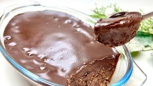

Desert

A delicious desert that you'll never get tired of eating. You haven't tasted anything better.
Ingredients:
- 150ml milk
- 70g oat flakes
- 1 banana
- 1 egg
- 20g cocoa
- 1/2 spoon bakimg powder
- 2 tablespoons of sugar
- vegatable oil
- 80g Chocolate
Steps
- Put oats and milk in a bowl(bowl 1) and mix well
- Cut banana into pieces and crush them in a seperate bowl(bowl 2)
- add egg in bowl 2 and whisk together
- Add cocoa, baking powder & sugar in bowl 2 and whisk well
- Pour bowl 1 contents into bowl 2 and mix well
- Grease the inside of a baking bowl with vegetable oil and pour all bowl 2 contents into it
- Bake at 180 degrees for 30-35 minutes
- Melt chocolate in bowl 3 and add 1/2 cup of milk and mix well
- When done baking, pour bowl 3 into baked goods and let it sit until chocolate turns hard